Passcode & biometric lock
Lock MaybeLater behind a passcode, with optional fingerprint or face unlock and an auto-lock timeout. Your saved links stay yours even if your phone ends up in someone else's hands.
MaybeLater turns “I'll get to it” into done. Share any link and it's saved, enriched with a title and thumbnail, tagged by on-device AI, and neatly organized, ready for whenever you are. Everything stays on your phone, and there's no account to create.
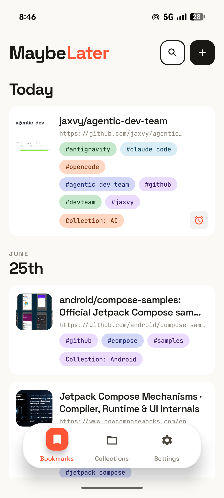
Privacy isn't a setting you turn on. It's a set of core features, built into how MaybeLater works.
Lock MaybeLater behind a passcode, with optional fingerprint or face unlock and an auto-lock timeout. Your saved links stay yours even if your phone ends up in someone else's hands.
There's no MaybeLater server and no account. Your bookmarks, and the AI that tags and summarizes them, run strictly on your device. Nothing you save is uploaded to us, because there's no us to upload it to.
Cloud backup is optional and off by default. When you turn it on, backups are encrypted end to end and stored in your own Google Drive with a key only you hold, so no one else, including me, can read them.
Capture, organize, and revisit, all in one calm place.
Save any link straight from the Android share sheet, or paste one in. MaybeLater fetches the title, thumbnail, and description automatically: oEmbed for sites like YouTube and Vimeo, Open Graph for everything else.
Group related links into collections with their own emoji and name, and see how many bookmarks each one holds at a glance. A tidy shelf for every project, topic, or someday-list.
Set a time to revisit any link and get a local notification. Reminders survive reboots and stay put until they actually fire. Reading a bookmark never clears them by accident.
Find anything with full-text search, then narrow by collection, tag, or status: unread, read, has reminder, broken, or duplicate. Sort newest or oldest, and switch between a roomy list or a packed grid.
A polished light and dark theme that follows your system, or lock it to whichever you prefer. Easy on the eyes for late-night saving and reading.
Open any saved page in a clean, distraction-free reader and keep reading even with no signal. Tune the text size and switch between light, sepia, and dark, so long reads stay comfortable anywhere.
Background health checks run daily, weekly, biweekly, or monthly and flag links that go dead, so your library never rots. Filter to just the broken ones, or run a full check on demand.
Send a link from any app and MaybeLater does the rest, pulling in the page title, a thumbnail, and a description, and flagging duplicates when a link normalizes to one you already saved. Add URLs manually too, and edit the title, tags, collection, notes, and reminder any time.
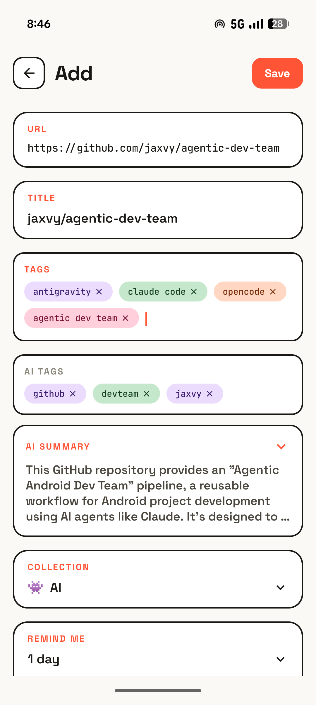
MaybeLater uses Gemini Nano and ML Kit to auto-tag saved pages (you choose the max number of tags) and to write a short summary you can skim before diving in, with live progress as it works. It's device-gated, so summaries only appear where Nano is supported, and page content stays entirely on the device.
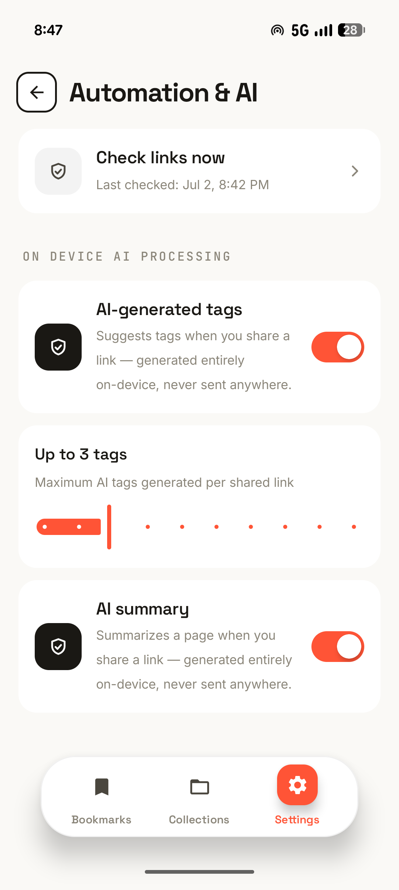
Tap “Read here” to open a saved page in a clean, distraction-free reader that keeps working offline, on the subway, on a flight, anywhere. Step the text size up or down and switch the theme between auto, light, sepia, and dark so long articles stay easy on the eyes.
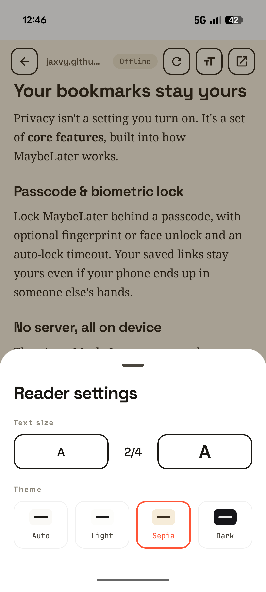
Browse by collection or by tag with live counts, run a full-text search, and slice the list with filters for Unread, Read, Has reminder, Broken link, or Duplicate. Sort newest or oldest first, pick a list or grid layout, and multi-select to act on bookmarks in bulk.
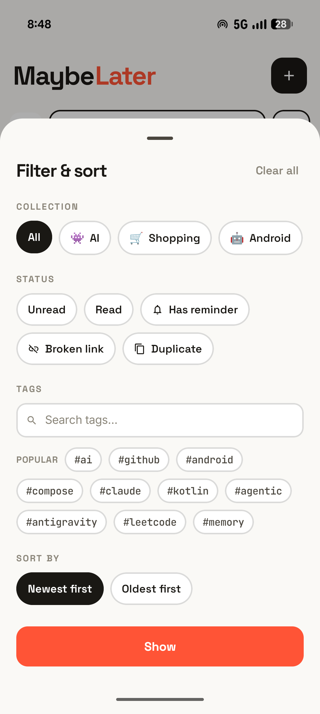
Everything lives in an on-device database that only you can reach. Add an app lock (a passcode with optional fingerprint or face unlock and an auto-lock timeout) and turn on scheduled, end-to-end encrypted backups to your own Google Drive. Prefer files? Export and import your bookmarks as plain or password-encrypted JSON.
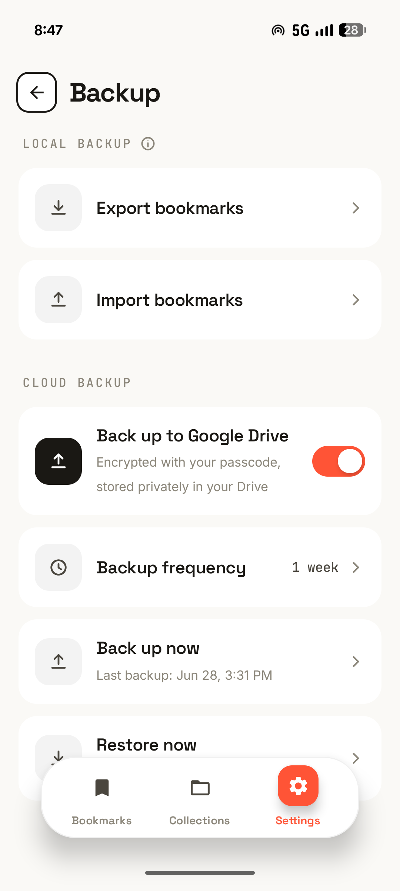
Every screen, straight from the app.
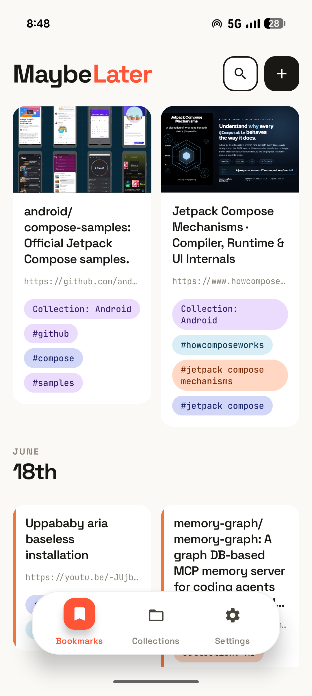
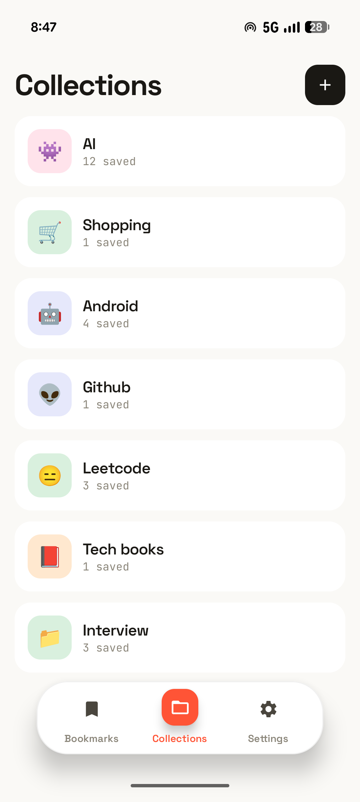
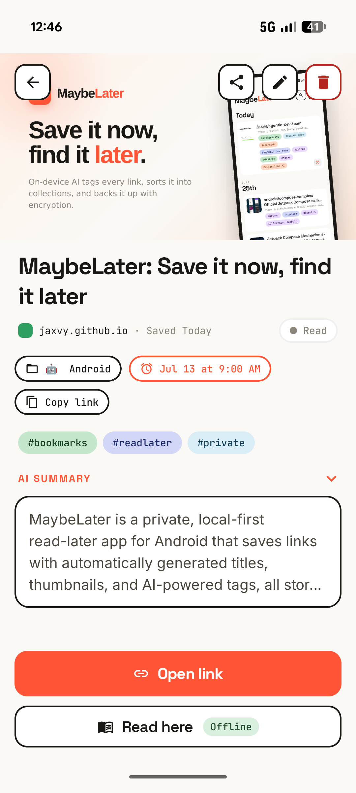
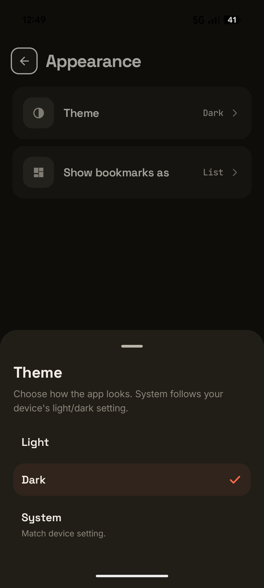
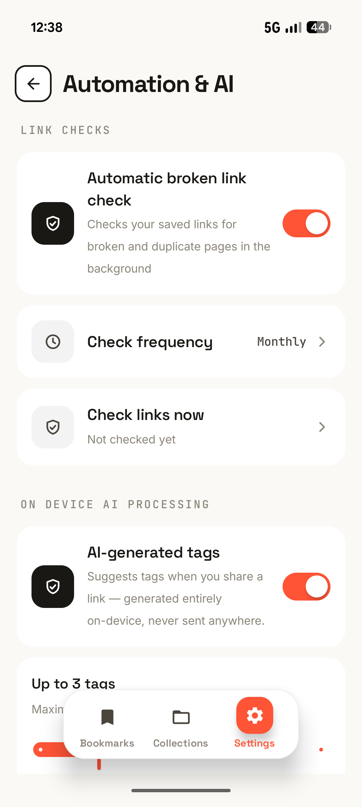
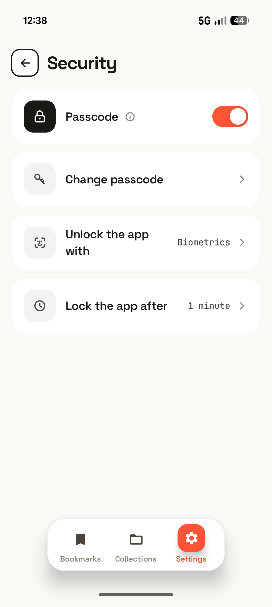
Send a link from any app through the share sheet, or paste one in yourself.
MaybeLater fetches the details, adds on-device AI tags and a summary, and drops it into a collection.
Set a reminder, filter to unread, or search, and pick up exactly where you left off.
On your device. Every bookmark lives in an on-device database, so browsing, editing, and searching all happen locally. The network is only used to fetch a page's metadata when you save it, run link-health checks, and (if you enable it) back up.
No. There's no MaybeLater account and no MaybeLater server. Cloud backup is entirely optional and, when enabled, saves end-to-end encrypted files to your own Google Drive.
Yes. Auto-tagging and summaries run on-device via Gemini Nano and ML Kit, so the content of the pages you save is never sent to an AI cloud service. On devices that don't support Nano, tagging falls back to a local heuristic and summaries simply aren't shown.
Android 10 (API level 29) and newer, on phones and tablets.
MaybeLater is free. There are no in-app purchases and no subscriptions. Every feature, including on-device AI and encrypted backup to your own Google Drive, is included.
Your bookmarks stay on your device. The app sends only anonymous, content-free usage analytics and crash reports (via Google Firebase), never your URLs, titles, notes, or content, and you can turn both off in Settings → Privacy. Full details are in the Privacy Policy.
Stop losing links in a sea of open tabs. Save them to MaybeLater and get to them when you're ready.
Get it on Google Play